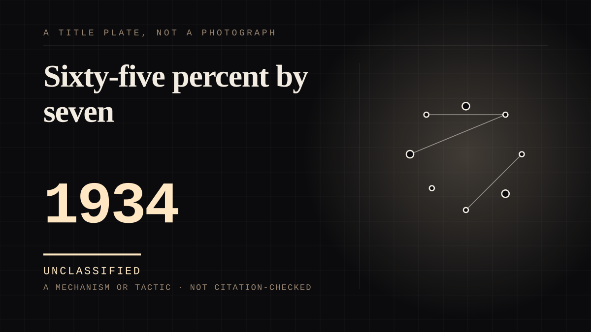

A mechanism or tactic · 1934 · Research
Sixty-five percent by seven
A named, described character with an air of reality, kept going by being referred to. Two-thirds of children have one, most of them invisible, and a quarter of those are unknown to their parents.

The largest single hole in this corpus until it was counted, and the purest instance of the phenomenon the site is about: a specific person who cannot answer, held in place by nothing but consistent attention. The prevalence is the finding - in the largest systematic study 829 children, 46.2 per cent, reported imaginary companions, and a separate study put it at 65 per cent by age seven - and the composition is the argument. Among preschool children 52 per cent of companions were props, special toys; among school-age children 67 per cent were entirely invisible. 57 per cent were human, 41 per cent animals. One could transform into any animal the child wanted. And 27 per cent of the children described a friend their parents did not know about. The honesty condition is the reverse of every other entry here: the child knows they invented it, which makes this the one relationship on the site that cannot be mistaken for a misreading of somebody real. What is also documented is that they are not always kind - a number were uncontrollable and some were a nuisance - and how they end, which is that they are usually replaced rather than lost, or simply forgotten, or superseded by real friendships serving the same need. Impersonation is near-universal alongside it: 95 per cent of school-age children pretended to be a character. This is the substrate the whole site is standing on, and it was missing.
Where it sits
1900 1900-1949 · 1934 1949
Provenance · 4 source record(s)
- retrievable65 per cent of children report having had an imaginary companion by age seven. Of the companions preschool children played with, 52 per cent were based on props such as special toys; of those created by school-age children, 67 per cent were invisible. 57 per cent were humans and 41 per cent animals, one being a human able to transform into any animal the child wanted. Guises included invisible boys and girls, a squirrel, a panther, a dog and a seven-inch-tall elephant. 27 per cent of the children described an imaginary friend their parents did not know about. 'Not all imaginary companions are friendly. A number were quite uncontrollable and some were a nuisance.' Impersonation was almost universal: 95 per cent of school-age children. Carlson on how they end: they 'simply go away, or children don't remember', or are replaced by new companions or by real friendships meeting the same needs.Carlson, L. A., & Taylor, A. M. Imaginary Friends: Most kids have one (or more). University of Washington News, 9 December 2004, reporting the University of Oregon study. ↗
- retrievableThe largest systematic study: 829 children, 46.2 per cent, reported experiences of imaginary companions. Quoted in later work as establishing that approximately 39 per cent of children aged five to seven reported an invisible imaginary companion and approximately 22 per cent of those aged eight to twelve did.Pearson, D., et al. (2001). Prevalence of imaginary companions in a normal child population. Journal of Child Psychology and Psychiatry. ↗
- retrievableThe prevalence range with personified objects included, and the negative result worth recording: 46 to 65 per cent of preschool and early school-age children. In this sample 26 of 60 children (43.3 per cent) reported imaginary companions, 15 invisible friends and 11 personified objects, and - the part this entry should not omit - prevalence did not differ between children with and without a history of maltreatment, consistent with retrospective data. The behaviour is common, not a marker of damage. Svendsen's 1934 definition is quoted in the related literature as the standard: an invisible character 'having an air of reality for the child, but no apparent objective basis'.Imaginary companions created by children who have lived in foster care. (PMC5663238) ↗
- retrievableThe spillover, which is the part with consequences: in a sample of 159 five-year-olds, 68 (43 per cent) reported an imaginary companion, and children with one were markedly more likely to describe their real best friend in mental terms - 29.6 per cent of descriptions against 12.6 per cent for children without. The invented relationship is training the real one.Davis, P. E., Meins, E., & Fernyhough, C. (2013). Children with imaginary companions focus on mental characteristics when describing their real-life friends. ↗
Connected · 2 out, 6 in
Reported as a story
It sits in
The full timeline → · The database → · See it in the atlas →